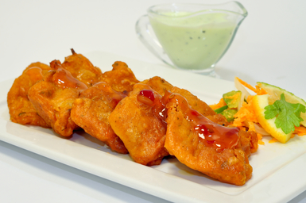

Ingredients:
1)4 white fish fillets (steamed and cut into
pieces)
2)2 eggs
3)A large pinch of salt
4)A pinch of red chili powder
5)2 tbsp corn flour
6)2 tbsp lemon juice
7)1 tsp chopped coriander leaves
8)Oil for deep-frying paoda
How to make Fish Pakora :
1)Beat the eggs, salt, chili powder, lemon juice and coriander leaves together to make a batter. Add corn flour and mix well to form a smooth batter.
2)Heat oil in a kadhai or deep-frying pan.
3)Dip each fish piece into the batter and fry in batches till golden and crisp all over.
4)Serve the fish pakora hot with your favorite chutney or ketchup.